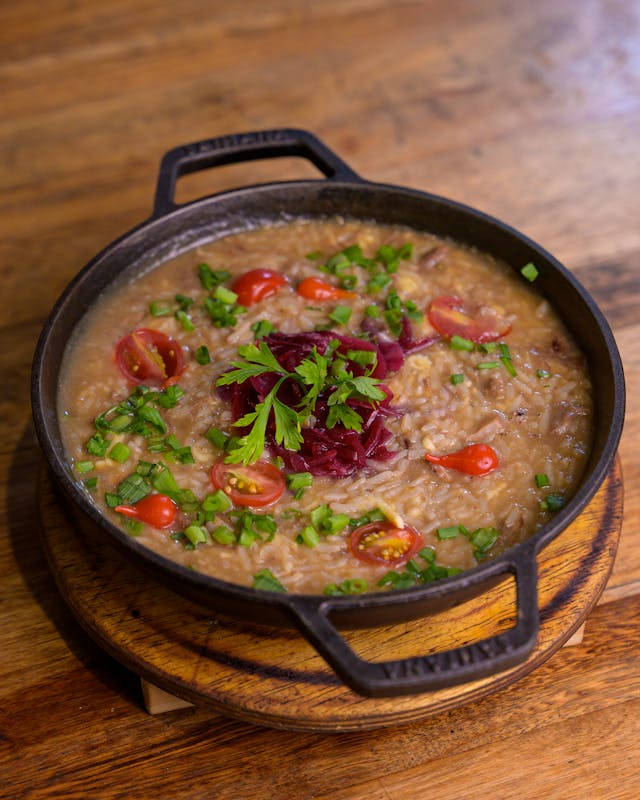

Home
Strawberry risotto

Photo by Daniel Duarte
Creamy Strawberry Risotto
Strawberry risotto (or risotto alle fragole) is an elegant, unconventional Italian dish that balances the creamy, savory nature of traditional risotto with the fruity acidity of fresh strawberries. Though it sounds like a dessert, it is a savory first course (primo) that gained popularity in the 1980s.
Ingredients
- 4 cups of vegetable broth, or as needed
- 2 tablespoons extra-virgin olive oil
- 1 cup Arborio or Carbaroli rice
- ¾ cup Prosecco
- 1 cup chopped fresh strawberries
- 2 tablespoons Parmigiano Reggiano
- ¼ cup grated Grana Padano cheese
- 2 tablespoons butter
- 2 shallots or 1 small onion
Steps
- Warm broth in a saucepan over low heat.
- Soften minced shallots or onions in butter and olive oil.
- Heat olive oil in a large saucepan over medium-high heat. Add rice and stir until fully coated with oil and pale gold in color, about 2 minutes.
- Pour in the wine and cook until it is absorbed.
- Add 1/2 cup warm broth and stir until broth is absorbed.
- Add 1/2 cup broth and strawberries; stir until absorbed.
- Add 1/2 cup broth, Grana Padana cheese; stir until absorbed.
- Continue adding broth, 1/2 cup at a time, stirring constantly, until liquid is absorbed and rice is tender yet firm to the bite. Stirring in the broth should take about 18 minutes in all.
- Off the heat, vigorously stir in butter and Parmesan to create a creamy consistency.